Last updated: 2026-04-18
Checks: 6 1
Knit directory: Data_Analysis/
This reproducible R Markdown analysis was created with workflowr (version 1.7.2). The Checks tab describes the reproducibility checks that were applied when the results were created. The Past versions tab lists the development history.
The R Markdown is untracked by Git. To know which version of the R
Markdown file created these results, you’ll want to first commit it to
the Git repo. If you’re still working on the analysis, you can ignore
this warning. When you’re finished, you can run
wflow_publish to commit the R Markdown file and build the
HTML.
Great job! The global environment was empty. Objects defined in the global environment can affect the analysis in your R Markdown file in unknown ways. For reproduciblity it’s best to always run the code in an empty environment.
The command set.seed(20260226) was run prior to running
the code in the R Markdown file. Setting a seed ensures that any results
that rely on randomness, e.g. subsampling or permutations, are
reproducible.
Great job! Recording the operating system, R version, and package versions is critical for reproducibility.
Nice! There were no cached chunks for this analysis, so you can be confident that you successfully produced the results during this run.
Great job! Using relative paths to the files within your workflowr project makes it easier to run your code on other machines.
Great! You are using Git for version control. Tracking code development and connecting the code version to the results is critical for reproducibility.
The results in this page were generated with repository version 579dff2. See the Past versions tab to see a history of the changes made to the R Markdown and HTML files.
Note that you need to be careful to ensure that all relevant files for
the analysis have been committed to Git prior to generating the results
(you can use wflow_publish or
wflow_git_commit). workflowr only checks the R Markdown
file, but you know if there are other scripts or data files that it
depends on. Below is the status of the Git repository when the results
were generated:
Ignored files:
Ignored: .DS_Store
Ignored: .Rhistory
Ignored: .Rproj.user/
Ignored: DataMiningwithR/.DS_Store
Ignored: analysis/.DS_Store
Ignored: analysis/.Rhistory
Ignored: analysis/images/
Untracked files:
Untracked: analysis/EDC_Pham.Rmd
Untracked: analysis/Gael_4.Rmd
Untracked: analysis/PLS_AFCM_quentin.Rmd
Untracked: stats_python_theorie_a_pratique_duverier_djifack_zebaze/
Unstaged changes:
Modified: analysis/EDC_RScript.Rmd
Note that any generated files, e.g. HTML, png, CSS, etc., are not included in this status report because it is ok for generated content to have uncommitted changes.
There are no past versions. Publish this analysis with
wflow_publish() to start tracking its development.
Ce document reprend le code du chapitre 4 et le
transforme en un support d’apprentissage lisible.
L’idée n’est pas seulement d’exécuter des lignes R, mais de comprendre
:
Un test statistique repose toujours sur le même enchaînement :
d/p/q/rPour presque toutes les lois sous R, on retrouve la même logique :
d... : densité ou masse de
probabilité en un point ;p... : probabilité cumulée ;q... : quantile ;r... : tirage aléatoire.Exemples :
dbinom() = probabilité exacte pour une loi binomiale
;pnorm() = probabilité cumulée sous une loi normale
;qchisq() = seuil critique d’une loi du \(\chi^2\) ;rt() = simulation aléatoire sous loi de Student.Point important : on ne “prouve” presque jamais \(H_1\). On rejette ou non \(H_0\) selon la compatibilité entre les données et la loi théorique de la VT sous \(H_0\).
La VT est une fonction calculée à partir de l’échantillon.
Exemples classiques :
La variable mesurée et la variable de test ne suivent pas forcément la même loi.
C’est un point que beaucoup de gens ratent, ce qui est assez prévisible dès qu’on confond données brutes et statistique de test.
p <- 0.2
n <- 4
k <- 2
choose(n, k) * p^k * (1 - p)^(n - k)#> [1] 0.1536dbinom(k, n, p)#> [1] 0.1536Interprétation.
On calcule ici \(P(X = 2)\) avec \(X \sim \mathcal{B}(n=4, p=0.2)\).
Les deux lignes doivent donner la même valeur :
À retenir. dbinom(k, n, p) donne une
probabilité exacte, pas une probabilité cumulée.
p <- 0.2
n <- 4
k <- 0:4
plot(
k, dbinom(k, n, p),
pch = 16, cex = 2,
xlim = range(0, 5), ylim = range(0, 0.5),
xlab = "Nombre de boules noires k",
ylab = "Probabilité f(k)",
cex.lab = 1.2, cex.axis = 1.1,
bty = "l"
)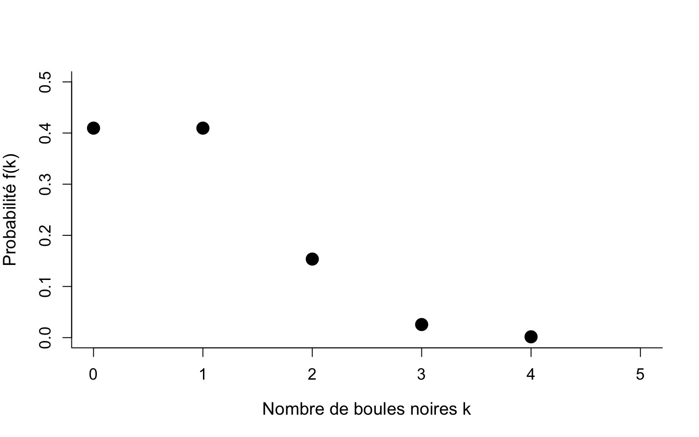
Interprétation.
La loi binomiale est discrète : on observe des masses
de probabilité sur des valeurs entières de \(k\).
Le graphe rappelle qu’il n’y a rien entre 0, 1, 2, 3 et 4. Les courbes
lisses sont jolies, mais les variables discrètes, elles, n’ont pas signé
pour ça.
p <- 0.2
n <- 4
dbinom(2, n, p) + dbinom(3, n, p) + dbinom(4, n, p)#> [1] 0.18081 - dbinom(0, n, p) - dbinom(1, n, p)#> [1] 0.1808pbinom(1, n, p, lower.tail = FALSE)#> [1] 0.1808Interprétation.
Ces trois instructions calculent la même quantité :
\[ P(X \ge 2) \]
lower.tail = FALSE signifie qu’on travaille dans la
queue droite de la distribution.
p <- 0.2
n <- 4
qbinom(0.1808, n, p, lower.tail = FALSE)#> [1] 1qbinom(0.15, n, p, lower.tail = FALSE)#> [1] 2qbinom(0.5, n, p)#> [1] 1Interprétation.
qbinom() cherche le seuil entier associé à
une probabilité cumulée donnée.
C’est utile pour définir des valeurs critiques dans les
tests exacts.
np <- 0.2
k <- 0:20
plot(
k, dbinom(k, 4, p), type = "l",
xlab = "Nombre de boules noires k",
ylab = "Probabilité f(k)",
cex.lab = 1.2, cex.axis = 1.1
)
lines(k, dbinom(k, 20, p), lwd = 3)
lines(k, dbinom(k, 50, p), lty = "39", lwd = 2)
legend(
"topright",
legend = c("n=4", "n=20", "n=50"),
lty = c(1, 1, 2), lwd = c(1, 3, 2), bty = "n"
)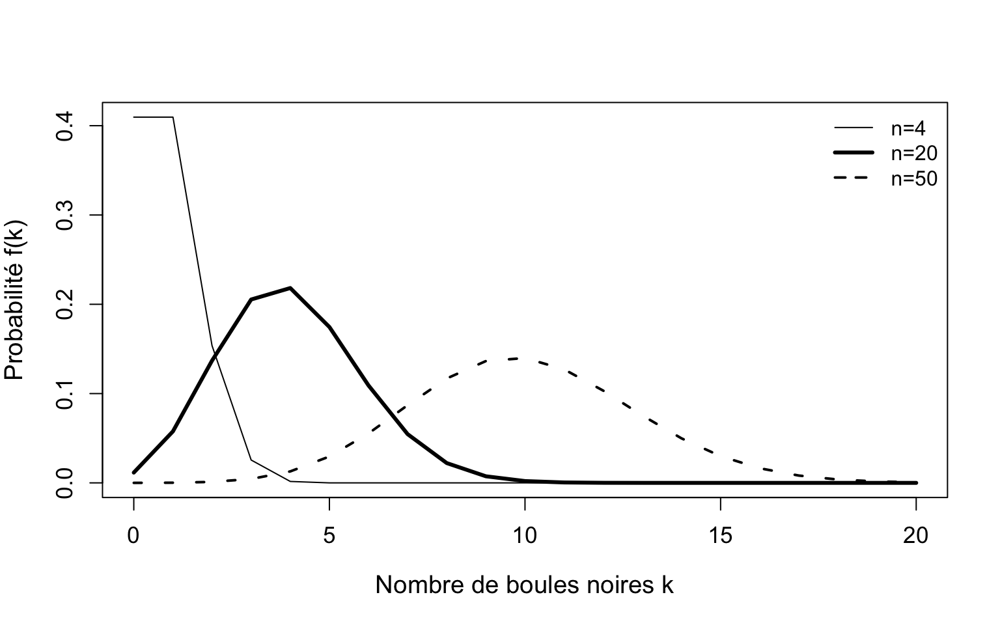
Interprétation.
Quand n augmente, la distribution se décale et se concentre
autour de \(np\).
On commence aussi à voir apparaître un comportement plus “gaussien” par
approximation.
k1 <- 2; k2 <- 7; k3 <- 1
p1 <- 0.1; p2 <- 0.4; p3 <- 0.5
factorial(k1 + k2 + k3) /
(factorial(k1) * factorial(k2) * factorial(k3)) *
p1^k1 * p2^k2 * p3^k3#> [1] 0.00294912dmultinom(c(k1, k2, k3), prob = c(p1, p2, p3))#> [1] 0.00294912Interprétation.
La loi multinomiale généralise la binomiale à plus de deux
catégories.
On calcule ici la probabilité d’obtenir exactement \((2,7,1)\) observations dans trois
classes.
library(scatterplot3d)
p1 <- 0.1; p2 <- 0.4; p3 <- 1 - p1 - p2
n <- 10
x <- NULL; y <- NULL; z <- NULL
for (k2 in 0:n) {
for (k1 in 0:n) {
x <- c(x, k1)
y <- c(y, k2)
if ((n - k1 - k2) >= 0) {
z <- c(z, dmultinom(c(k1, k2, n - k1 - k2), prob = c(p1, p2, p3)))
} else {
z <- c(z, 0)
}
}
}
scatterplot3d(
x, y, z,
type = "h", pch = 16,
xlab = "Nombre de boules noires k1",
ylab = "",
zlab = "Probabilité",
highlight.3d = TRUE,
box = FALSE
)
par(xpd = NA)
text(x = 7.5, y = 0.5, labels = "Nombre de boules rouges k2", srt = 38)Note pédagogique.
Chunk laissé en eval=FALSE par défaut car il demande le
package scatterplot3d.
L’intérêt conceptuel est de voir que la probabilité est répartie sur un
simplexe discret, pas sur une ligne comme dans la
binomiale.
p <- 0.2
n <- 4
k <- 2
r <- 2
choose(n - 1, k - 1) * p^k * (1 - p)^(n - k)#> [1] 0.0768dnbinom(n - k, k, p)#> [1] 0.0768dnbinom(r, k, p)#> [1] 0.0768Interprétation.
La loi de Pascal ou binomiale négative s’intéresse au nombre
d’échecs avant un certain nombre de succès.
Selon l’écriture choisie :
n-k = nombre d’échecs ;k = nombre de succès attendus.p <- 0.2
n <- 1:80
k <- 2
plot(
n, dnbinom(n - k, k, p), type = "l",
xlab = "Nombre de tirages n (loi de Pascal)",
ylab = "Probabilité f(n)",
cex.lab = 1.2, cex.axis = 1.1
)
lines(n, dnbinom(n - k, 1, 0.5), lwd = 3)
lines(n, dnbinom(n - 2, 2, 0.02), lty = "39", lwd = 2)
lines(n, dnbinom(n - 15, 15, 0.2), lty = "83", lwd = 2)
legend(
"topright",
legend = c("k=2, p=0.2", "k=1, p=0.5", "k=2, p=0.02", "k=15, p=0.2"),
lty = c(1, 1, 2, 3), lwd = c(1, 3, 2, 2), bty = "n"
)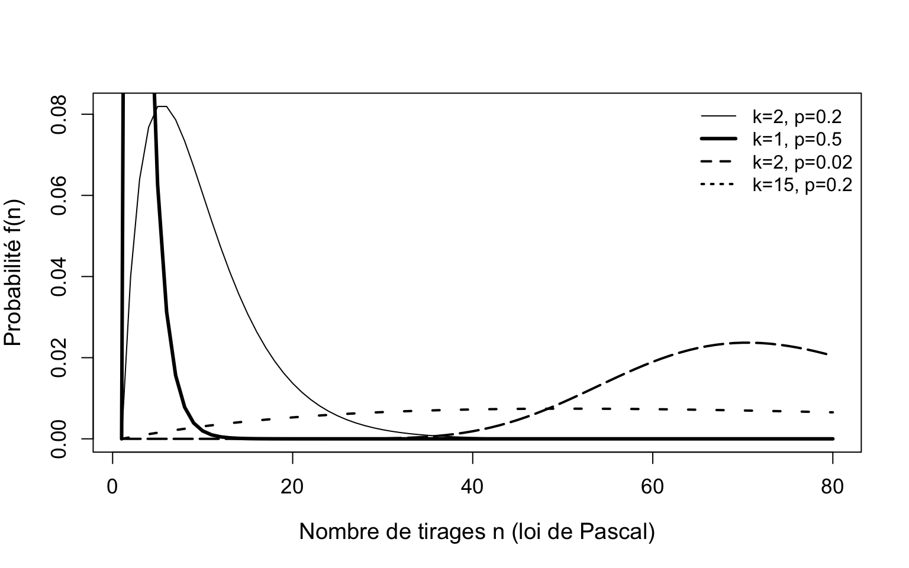
Interprétation.
Plus le succès est rare, plus la distribution s’étale vers la
droite.
Autrement dit, si \(p\) est faible, il
faut souvent beaucoup de tirages pour accumuler les succès attendus.
p <- 0.2
n <- 4
r <- 3
p * (1 - p)^(n - 1)#> [1] 0.1024dgeom(r, p)#> [1] 0.1024Interprétation.
La loi géométrique est un cas particulier de la binomiale négative :
elle décrit le nombre d’échecs avant le premier
succès.
p <- 0.2
n <- 1:50
plot(
n, dgeom(n - 1, p), type = "l",
xlab = "Nombre de tirages n",
ylab = "Probabilité f(n)",
cex.lab = 1.2, cex.axis = 1.1
)
lines(n, dgeom(n - 1, 0.05), lwd = 3)
lines(n, dgeom(n - 1, 0.5), lty = "39", lwd = 2)
legend(
"topright",
legend = c("p=0.2", "p=0.05", "p=0.5"),
lty = c(1, 1, 2), lwd = c(1, 3, 2), bty = "n"
)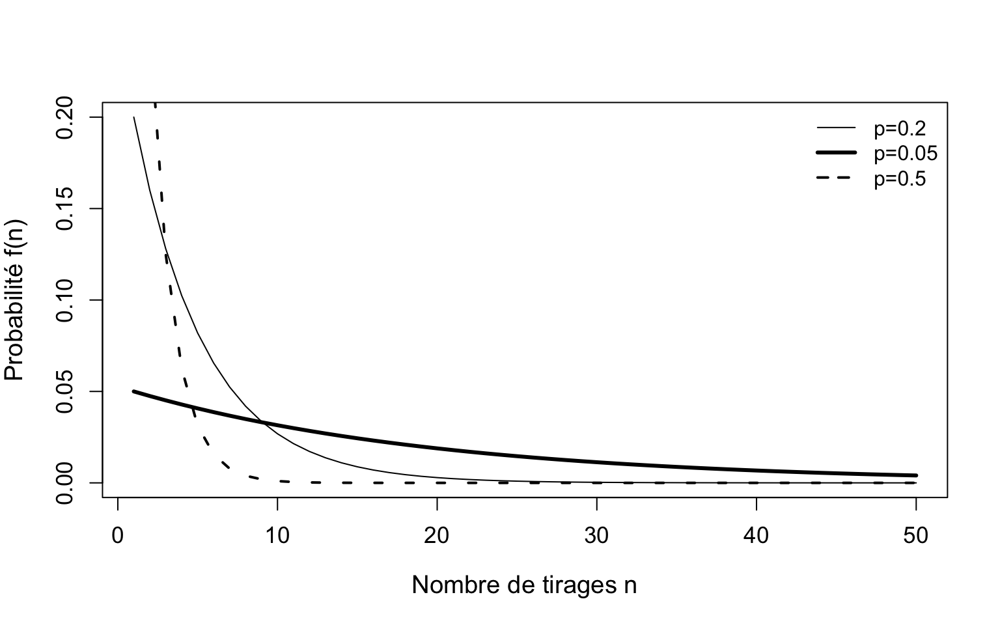
Interprétation.
Quand p augmente, le premier succès arrive plus tôt en
moyenne.
La masse de probabilité se rapproche donc des petites valeurs.
k <- 2
Np <- 10
N <- 50
n <- 4
choose(Np, k) * choose(N - Np, n - k) / choose(N, n)#> [1] 0.1524099dhyper(k, Np, N - Np, n)#> [1] 0.1524099Interprétation.
La loi hypergéométrique s’applique aux tirages sans
remise.
C’est la vraie loi derrière les problèmes de contingence et certains
tests exacts.
k <- 0:20
N <- 50
plot(
k, dhyper(k, 10, N - 10, 4), type = "l",
ylim = range(0, 0.7),
xlab = "Nombre de boules noires k",
ylab = "Probabilité f(k)",
cex.lab = 1.2, cex.axis = 1.1
)
lines(k, dhyper(k, 10, N - 10, 20), lwd = 3)
lines(k, dhyper(k, 10, N - 10, 48), lty = "39", lwd = 2)
lines(k, dhyper(k, 40, N - 40, 20), lty = "83", lwd = 2)
legend(
"topright",
legend = c("Np=10, n=4", "Np=10, n=20", "Np=10, n=48", "Np=40, n=20"),
lty = c(1, 1, 2, 3), lwd = c(1, 3, 2, 2), bty = "n"
)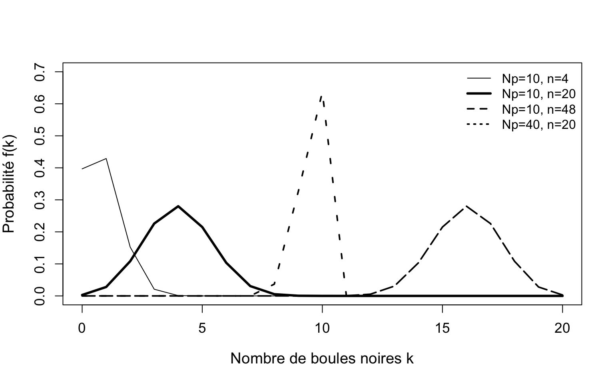
Interprétation.
Plus l’échantillon prélevé est grand relativement à la population, plus
l’effet du sans remise devient important.
k <- 2
p <- 0.02
n <- 50
(n * p)^k * exp(-n * p) / factorial(k)#> [1] 0.1839397dpois(k, n * p)#> [1] 0.1839397Interprétation.
La loi de Poisson approxime une binomiale quand :
n est grand ;p est petit ;np reste modéré.Elle est centrale pour modéliser des événements rares.
k <- 0:20
plot(
k, dpois(k, 50 * 0.02), type = "l",
xlab = "Nombre de boules noires k",
ylab = "Probabilité f(k)",
cex.lab = 1.2, cex.axis = 1.1
)
lines(k, dpois(k, 50 * (1 / 200)), lwd = 3)
lines(k, dpois(k, 200 * 0.02), lty = "39", lwd = 2)
lines(k, dpois(k, 500 * 0.02), lty = "83", lwd = 2)
legend(
"topright",
legend = c("np=1", "np=0.25", "np=4", "np=10"),
lty = c(1, 1, 2, 3), lwd = c(1, 3, 2, 2), bty = "n"
)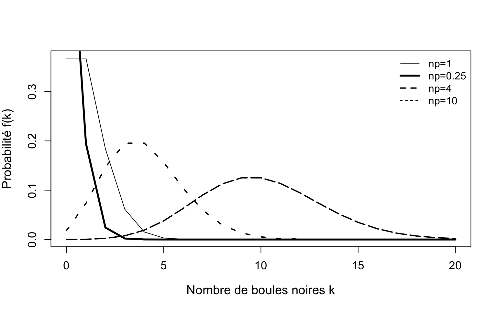
Interprétation.
Dans une loi de Poisson, la moyenne et la variance sont toutes deux
égales à \(\lambda = np\).
C’est utile, mais aussi dangereux en pratique : si la variance dépasse
fortement la moyenne, il faut penser à la
surdispersion.
x <- 160
mu <- 165
sigma <- 7
1 / (sqrt(2 * pi) * sigma) * exp(-((x - mu)^2 / (2 * sigma^2)))#> [1] 0.04415934dnorm(x, mu, sigma)#> [1] 0.04415934pnorm(x, mu, sigma, lower.tail = FALSE)#> [1] 0.7624747pnorm(x, mu, sigma)#> [1] 0.2375253Interprétation.
dnorm() renvoie une densité, pas une
probabilité ponctuelle au sens discret.
Pour une variable continue, \(P(X =
160)\) est théoriquement nulle. Ce que mesure
dnorm(160, ...), c’est la hauteur de la courbe en 160.
mu <- 165
sigma <- 7
pnorm(mu + 1.96 * sigma, mu, sigma) - pnorm(mu - 1.96 * sigma, mu, sigma)#> [1] 0.9500042mu + 1.96 * sigma#> [1] 178.72Interprétation.
On retrouve ici l’idée classique que, sous normalité,
\[ P(\mu - 1.96\sigma \le X \le \mu + 1.96\sigma) \approx 0.95 \]
F <- 0.5
mu <- 165
sigma <- 7
qnorm(F, mu, sigma, lower.tail = TRUE)#> [1] 165F <- 0.025
qnorm(F, mu, sigma, lower.tail = FALSE)#> [1] 178.7197Interprétation.
qnorm() est la fonction qui permet d’obtenir les
seuils critiques d’une loi normale.
x <- seq(-10, 10, 0.01)
plot(
x, dnorm(x, 0, 1), type = "l",
xlab = "Variable continue x",
ylab = "Densité f(x)",
cex.lab = 1.2, cex.axis = 1.1
)
lines(x, dnorm(x, 4, 1), lwd = 3)
lines(x, dnorm(x, 0, 4), lty = "39", lwd = 2)
legend(
"topright",
legend = c("mu=0, sigma=1", "mu=4, sigma=1", "mu=0, sigma=4"),
lty = c(1, 1, 2), lwd = c(1, 3, 2), bty = "n"
)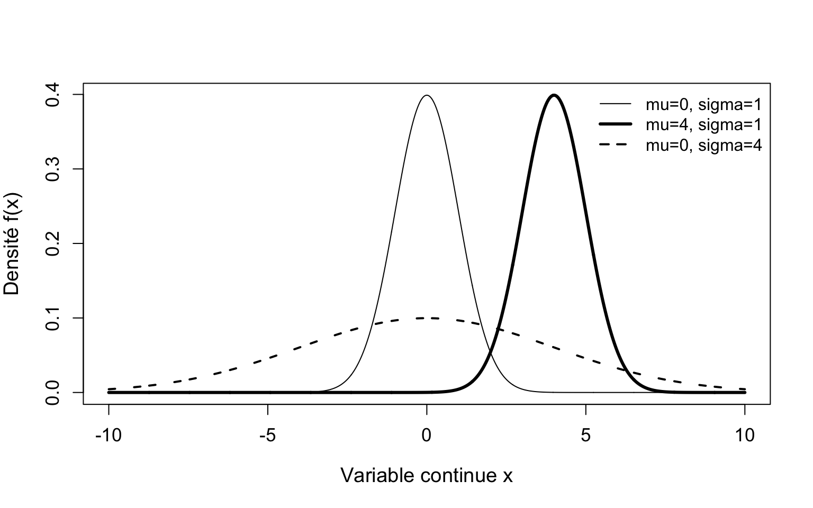
Interprétation.
- Modifier mu décale la courbe. - Modifier
sigma change l’étalement.
x <- -2.57
1 / sqrt(2 * pi) * exp(-x^2 / 2)#> [1] 0.01467825dnorm(x)#> [1] 0.01467825pnorm(x)#> [1] 0.005084926pnorm(1, lower.tail = FALSE)#> [1] 0.1586553qnorm(0.025, lower.tail = FALSE)#> [1] 1.959964Interprétation.
La loi normale centrée réduite est la norme de référence pour la
standardisation.
En pratique, beaucoup de statistiques deviennent exploitables après
transformation en score \(z\).
x <- seq(-3, 3, 0.01)
plot(x, dnorm(x), type = "l", xlab = "Variable continue x", ylab = "Densité f(x)")
x2 <- seq(1, 3, 0.01)
polygon(x = c(x2, 3, 1), y = c(dnorm(x2), 0, 0), col = "grey")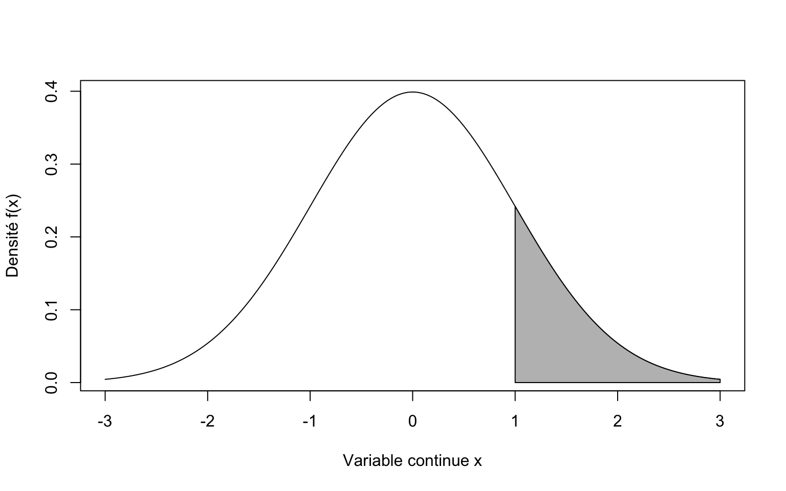
Interprétation.
Le polygone grisé représente une probabilité en queue
droite.
C’est exactement l’intuition visuelle d’une p value unilatérale.
x <- 2
lambda <- 1
lambda * exp(-lambda * x)#> [1] 0.1353353dexp(x)#> [1] 0.1353353pexp(x)#> [1] 0.8646647pexp(x, lower.tail = FALSE)#> [1] 0.1353353qexp(0.025, lower.tail = FALSE)#> [1] 3.688879Interprétation.
La loi exponentielle modélise un temps d’attente sans
mémoire.
Elle est utile comme brique conceptuelle vers les processus de Poisson
et l’analyse de survie.
x <- 2
alpha <- 1
beta <- 1
1 / (beta^alpha * gamma(alpha)) * x^(alpha - 1) * exp(-x / beta)#> [1] 0.1353353dgamma(x, shape = alpha, scale = beta)#> [1] 0.1353353dgamma(x, shape = 1, scale = 3)#> [1] 0.171139pgamma(x, shape = 1, scale = 3)#> [1] 0.4865829pgamma(x, shape = 1, scale = 3, lower.tail = FALSE)#> [1] 0.5134171qgamma(0.025, shape = 1, scale = 3, lower.tail = FALSE)#> [1] 11.06664Interprétation.
La loi gamma généralise l’exponentielle.
Elle sert souvent à modéliser des variables positives asymétriques.
x <- seq(-0.1, 8, 0.01)
plot(x, dgamma(x, shape = 1, scale = 1), type = "l", xlim = range(0, 7),
xlab = "Variable continue x", ylab = "Densité f(x)")
lines(x, dgamma(x, shape = 1, scale = 4), lwd = 3)
lines(x, dgamma(x, shape = 4, scale = 1), lty = "39", lwd = 2)
lines(x, dgamma(x, shape = 2, scale = 2), lty = "83", lwd = 2)
legend(
"topright",
legend = c("a=1,b=1", "a=1,b=4", "a=4,b=1", "a=2,b=2"),
lty = c(1,1,2,3), lwd = c(1,3,2,2), bty = "n"
)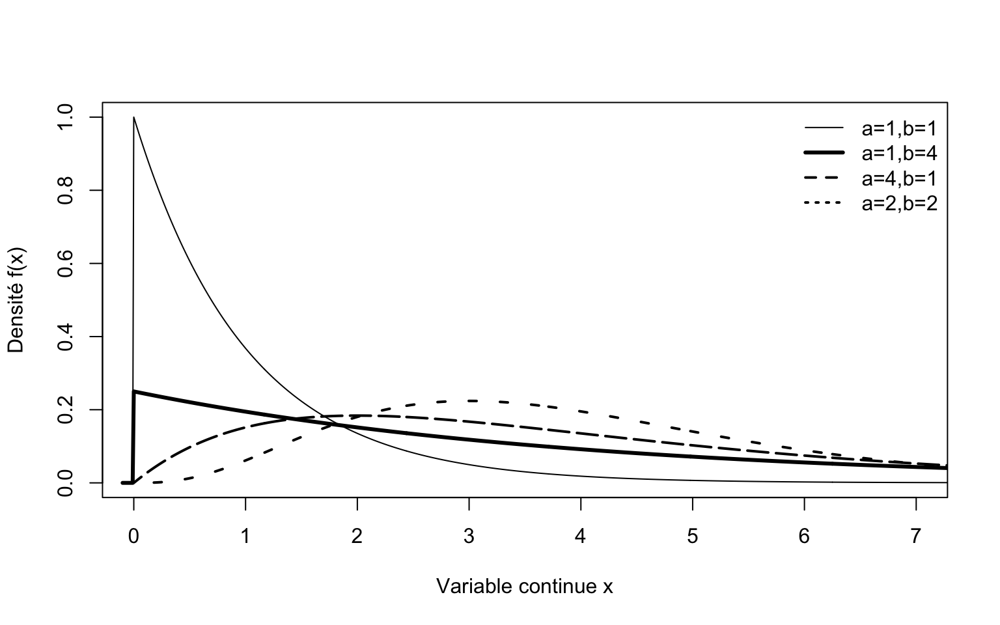
Interprétation.
La forme change fortement selon shape et
scale.
C’est utile pour comprendre pourquoi toutes les variables positives
asymétriques ne se ressemblent pas.
x <- 2
ddl <- 4
1 / (2^(ddl / 2) * gamma(ddl / 2)) * x^(ddl / 2 - 1) * exp(-x / 2)#> [1] 0.1839397dchisq(x, ddl)#> [1] 0.1839397pchisq(x, ddl)#> [1] 0.2642411pchisq(x, ddl, lower.tail = FALSE)#> [1] 0.7357589qchisq(0.025, ddl, lower.tail = FALSE)#> [1] 11.14329Interprétation.
La loi du \(\chi^2\) apparaît dans
:
Elle est toujours positive et asymétrique à droite, surtout pour petits ddl.
x <- 2
ddl1 <- 2
ddl2 <- 3
df(x, ddl1, ddl2)#> [1] 0.1202425df(x, ddl2, ddl1)#> [1] 0.1217848pf(x, ddl1, ddl2)#> [1] 0.7194341pf(x, ddl1, ddl2, lower.tail = FALSE)#> [1] 0.2805659qf(0.025, ddl1, ddl2, lower.tail = FALSE)#> [1] 16.04411Interprétation.
La loi de Fisher sert surtout à comparer des variances
ou des rapports de variabilité expliquée.
C’est la loi de référence de l’ANOVA.
t <- 2
ddl <- 3
gamma((ddl + 1) / 2) / (sqrt(ddl * pi) * gamma(ddl / 2)) * (1 + t^2 / ddl)^(-((ddl + 1) / 2))#> [1] 0.06750966dt(t, ddl)#> [1] 0.06750966pt(t, ddl)#> [1] 0.930337pt(t, ddl, lower.tail = FALSE)#> [1] 0.06966298qt(0.025, ddl, lower.tail = FALSE)#> [1] 3.182446Interprétation.
La loi de Student ressemble à une normale, mais avec des queues
plus épaisses quand les ddl sont faibles.
x <- seq(-3, 3, 0.01)
plot(x, dt(x, 1), type = "l", ylim = range(0, 0.5),
xlab = "Variable continue t", ylab = "Densité f(t)")
lines(x, dt(x, 3), lwd = 3)
lines(x, dt(x, 30), lty = "39", lwd = 2)
legend(
"topright",
legend = c("ddl=1", "ddl=3", "ddl=30"),
lty = c(1, 1, 2), lwd = c(1, 3, 2), bty = "n"
)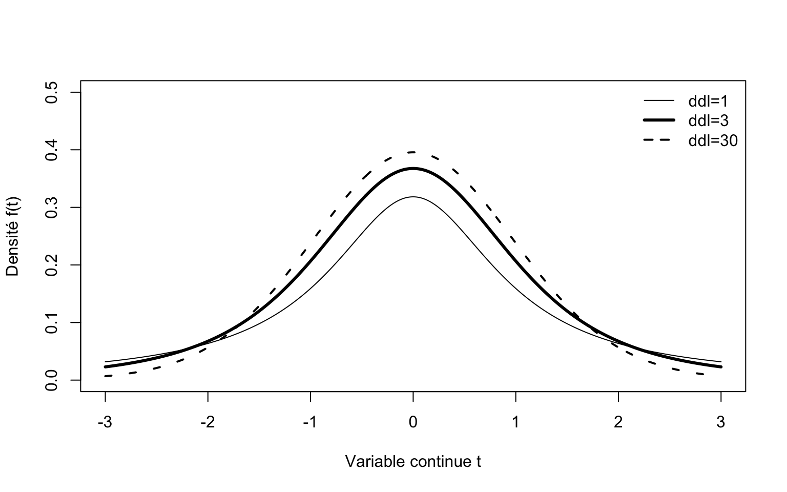
Interprétation.
Quand les ddl augmentent, la loi de Student converge vers la loi
normale.
C’est l’argument intuitif derrière le rôle de la taille
d’échantillon.
k <- 3
n1 <- 2
n2 <- 2
dwilcox(k, n1, n2)#> [1] 0.1666667Interprétation.
La fonction dwilcox() donne la probabilité de la
statistique de Wilcoxon-Mann-Whitney sous l’hypothèse nulle d’identité
de distribution entre groupes.
k <- 0:50
plot(k, dwilcox(k, 2, 2), type = "l",
xlab = "Valeur de U", ylab = "Probabilité f(U)")
lines(k, dwilcox(k, 5, 5), lwd = 3)
lines(k, dwilcox(k, 8, 8), lty = "39", lwd = 2)
lines(k, dwilcox(k, 8, 2), lty = "83", lwd = 2)
legend(
"topright",
legend = c("2 vs 2", "5 vs 5", "8 vs 8", "8 vs 2"),
lty = c(1,1,2,3), lwd = c(1,3,2,2), bty = "n"
)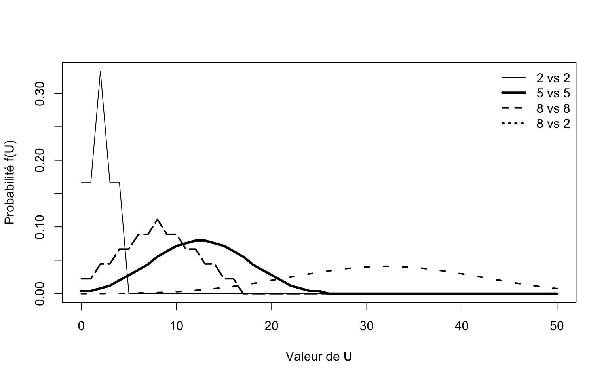
Interprétation.
La distribution dépend des tailles n1 et
n2.
Avec grands effectifs, elle tend vers une approximation normale.
W <- 12
n1 <- 4
n2 <- 2
W - 0.5 * n1 * (n1 + 1)#> [1] 2Interprétation.
La somme des rangs W et la statistique U
contiennent la même information, exprimée différemment.
La relation permet de passer de l’une à l’autre sans difficulté.
k <- 2
n1 <- 4
n2 <- 2
pwilcox(k, n1, n2, lower.tail = FALSE)#> [1] 0.7333333Interprétation.
Ici on calcule une probabilité de queue droite pour la statistique de
Wilcoxon-Mann-Whitney.
Cette section reprend le code long du livre. Elle est très utile pour comprendre comment naît la distribution exacte, mais elle devient vite coûteuse en mémoire.
n1 <- 2
n2 <- 2
n <- n1 + n2
time.ini <- as.numeric(Sys.time())
nb.seq <- choose(n, n1)
if (nb.seq < 2^31 - 1) {
cat("Nombre de combinaisons : ", nb.seq, "\n\n")
comb <- matrix("O", nrow = nb.seq, ncol = n)
} else {
cat("Nombre de séquences possibles", nb.seq,
"au-dessus de la limite de dimension d'une matrice dans R\n\n")
}
rang <- 1:n
pos.seq <- 1:length(rang)
pos.seq.diff <- pos.seq[!pos.seq %in% rang]
rang.diff <- rang[!rang %in% pos.seq]
library(gtools)
if (n1 <= n2) {
n.tempo <- n1
cat("Dans comb, O représente la classe 2 et A la classe 1\n\n")
} else {
n.tempo <- n2
cat("Dans comb, O représente la classe 1 et A la classe 2\n\n")
}
pos.col.A <- combinations(n, n.tempo, pos.seq, set = FALSE)
comb[matrix(
ncol = 2,
c(rep(1:nb.seq, each = ncol(pos.col.A)), as.vector(t(pos.col.A)))
)] <- "A"
comb <- as.data.frame(comb)
if (length(pos.seq.diff) != 0) {
for (i in 1:length(rang.diff)) {
pos.col.A[pos.col.A == pos.seq.diff[i]] <- rang.diff[i]
}
}
serie.W <- apply(pos.col.A, 1, sum)
serie.U <- serie.W - 0.5 * n1 * (n1 + 1)
comb.W.U <- cbind(comb, serie.W, serie.U)
if (nb.seq < 100) comb.W.U
W <- sort(unique(serie.W))
prob.W <- table(serie.W) / length(serie.W)
prob.W
plot(W, as.vector(prob.W), type = "b", pch = 16,
xlab = "Valeur de W", ylab = "Probabilité f(W)")
library(lubridate)
time.fin <- as.numeric(Sys.time())
cat("Temps de calcul total : ",
as.character(seconds_to_period(round(time.fin - time.ini))), "\n\n")Interprétation.
Ce chunk montre le mécanisme exact du test :
W puis U pour chaque
configuration ;Message pédagogique.
C’est probablement la meilleure section pour comprendre qu’une loi
exacte n’est pas un objet mystique tombé du ciel. C’est juste de la
combinatoire, plus un peu de RAM sacrifiée au dieu du calcul.
k <- 3
n <- 3
dsignrank(k, n)#> [1] 0.25psignrank(2, 3, lower.tail = FALSE)#> [1] 0.625psignrank(2, 3)#> [1] 0.375Interprétation.
signrank correspond ici à la distribution de la somme des
rangs signés dans le test de Wilcoxon apparié.
k <- 0:50
plot(k, dsignrank(k, 3), type = "l",
xlab = "Valeur de V", ylab = "Probabilité f(V)")
lines(k, dsignrank(k, 5), lwd = 3)
lines(k, dsignrank(k, 10), lty = "83", lwd = 2)
legend(
"topright",
legend = c("n=3", "n=5", "n=10"),
lty = c(1,1,2), lwd = c(1,3,2), bty = "n"
)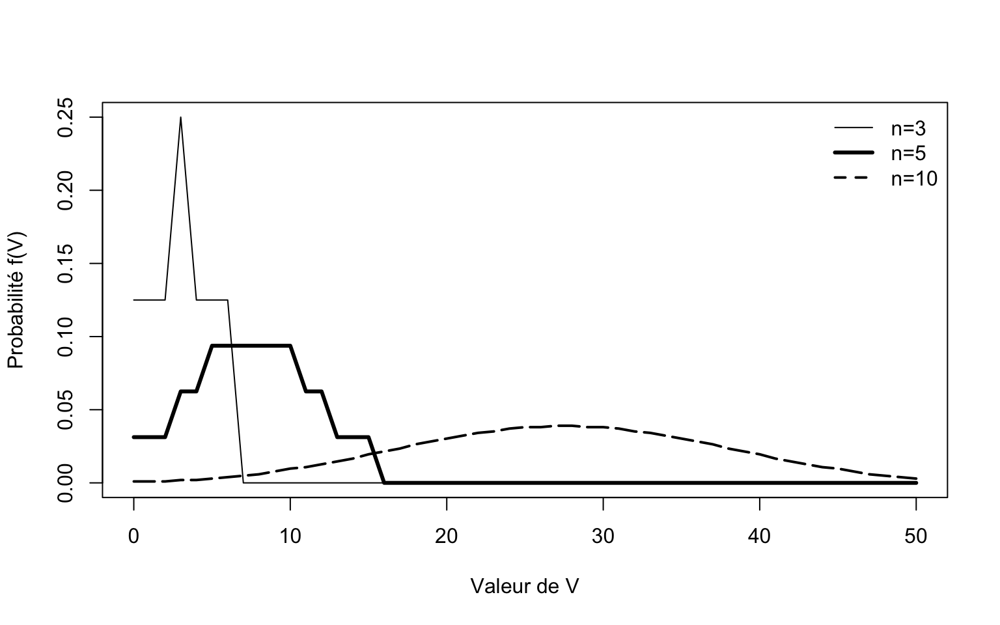
n <- 3
time.ini <- as.numeric(Sys.time())
seed <- vector("list", n)
for (i in 1:n) seed[[i]] <- c("A", "O")
rang <- 1:n
library(gtools)
nb.seq <- 2^n
if (nb.seq < 2^31 - 1) {
cat("Nombre de séquences :", nb.seq, "\n\n")
comb <- expand.grid(seed)
comb.t <- t(comb)
} else {
cat("Nombre de séquences possibles au-dessus de la limite\n\n")
}
serie.V <- NULL
for (i in 1:ncol(comb.t)) {
if (any(comb.t[, i] == "A")) {
serie.V <- c(serie.V, tapply(rang, comb.t[, i], sum)[1])
} else {
serie.V <- c(serie.V, 0)
}
}
if (ncol(comb.t) < 100) {
comb.V <- cbind(as.data.frame(t(comb.t)), serie.V)
comb.V
}
V <- sort(unique(serie.V))
prob.V <- table(serie.V) / length(serie.V)
prob.V
plot(V, as.vector(prob.V), type = "b", pch = 16,
xlab = "Valeur de V", ylab = "Probabilité f(V)")
library(lubridate)
time.fin <- as.numeric(Sys.time())
cat("Temps de calcul total :",
as.character(seconds_to_period(round(time.fin - time.ini))), "\n\n")Interprétation.
Même logique que précédemment : on énumère toutes les combinaisons de
signes possibles, puis on calcule la somme des rangs associés.
m.theo <- 165
n <- 10
t <- NULL
for (i in 1:500) {
Echantillon <- rnorm(n, 165, 7)
m <- mean(Echantillon)
s <- sd(Echantillon)
t.calc <- (m - m.theo) / (s / n^0.5)
t <- c(t, t.calc)
}
hist(
t, freq = FALSE,
main = "Fluctuation de la VT t",
ylim = range(0, 0.5),
xlab = "Valeurs de la VT t",
ylab = "Densité de la distribution",
cex.lab = 1.2, cex.axis = 1.1
)
VT.t <- seq(-5, 10, 0.01)
lines(VT.t, dt(VT.t, n - 1), lwd = 2)
legend(
"topright",
c("A cause de l'échantillonnage", "Prévue par le test t"),
lty = c(NA, 1), lwd = c(NA, 2), pch = c(22, NA),
pt.cex = c(2.5, NA), pt.bg = c("white", NA),
bty = "n"
)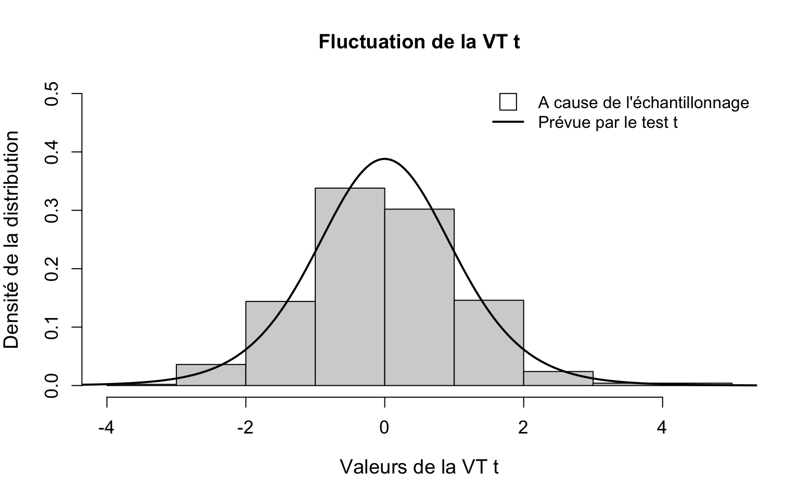
Interprétation.
Le but est de montrer que :
Ce qu’il faut comprendre.
Un test n’est pas une machine à produire des vérités. C’est une machine
à situer une valeur observée dans une distribution attendue sous \(H_0\).
pnorm(168, 165, 0.99, lower.tail = FALSE)#> [1] 0.001221542Interprétation.
Cette ligne donne la probabilité, sous une loi normale de moyenne 165 et
écart-type 0.99, d’observer une valeur supérieure ou égale à 168.
C’est exactement le mécanisme d’une p value unilatérale droite dans un cadre normal.
nb.coups.partis <- 1
tentatives <- 1:10
p <- 1/20
nb.coups.vides <- tentatives - nb.coups.partis
probabilite <- dbinom(nb.coups.partis, tentatives, p)
data.frame(tentatives, nb.coups.partis, nb.coups.vides, probabilite)#> tentatives nb.coups.partis nb.coups.vides probabilite
#> 1 1 1 0 0.0500000
#> 2 2 1 1 0.0950000
#> 3 3 1 2 0.1353750
#> 4 4 1 3 0.1714750
#> 5 5 1 4 0.2036266
#> 6 6 1 5 0.2321343
#> 7 7 1 6 0.2572822
#> 8 8 1 7 0.2793349
#> 9 9 1 8 0.2985392
#> 10 10 1 9 0.3151247Interprétation.
Plus on multiplie les essais ou les tests, plus la probabilité d’obtenir
au moins un faux positif augmente.
nb.coups.partis <- 1:10
tentatives <- 10
p <- 1/20
sum(dbinom(nb.coups.partis, tentatives, p))#> [1] 0.4012631Interprétation.
Cette somme revient à calculer la probabilité d’avoir au moins
un succès sur 10 tentatives.
m.theo <- 165
n <- 10
moyenne <- NULL
t <- NULL
p.value <- NULL
for (i in 1:20) {
Echantillon <- rnorm(10, 165, 7)
m <- mean(Echantillon)
moyenne <- c(moyenne, m)
s <- sd(Echantillon)
t.calc <- (m - m.theo) / (s / n^0.5)
t <- c(t, t.calc)
p <- pt(t.calc, n - 1, lower.tail = FALSE)
p.value <- c(p.value, p)
}
length(which(p.value <= 0.05))#> [1] 0data.frame(moyenne, t, p.value)#> moyenne t p.value
#> 1 164.6331 -0.16287177 0.56289111
#> 2 169.3402 1.78712797 0.05377910
#> 3 163.5165 -0.66879901 0.73979626
#> 4 166.8156 0.61251601 0.27767730
#> 5 164.9123 -0.05863976 0.52273980
#> 6 165.9548 0.40365131 0.34794574
#> 7 166.4184 0.68626892 0.25491766
#> 8 166.3782 0.46212224 0.32748075
#> 9 168.8479 1.74889413 0.05712116
#> 10 161.9754 -1.08740600 0.84744008
#> 11 164.0488 -0.43134618 0.66181775
#> 12 166.1237 0.62030815 0.27521844
#> 13 161.0226 -2.24845990 0.97443412
#> 14 164.1361 -0.38107272 0.64400548
#> 15 166.2012 0.43070941 0.33840534
#> 16 163.9643 -0.72340592 0.75609760
#> 17 163.6881 -0.58509853 0.71357175
#> 18 168.2240 1.20987111 0.12857325
#> 19 164.6078 -0.20992498 0.58079927
#> 20 163.2400 -0.68807331 0.74562454Interprétation.
Sous \(H_0\), on s’attend à environ
5% de tests significatifs par hasard si le seuil vaut
0.05.
C’est le sens réel du risque \(\alpha\).
x <- seq(-5, 5, 0.01)
plot(x, dt(x, 9), type = "l", ylim = range(0, 0.55),
xlab = "Valeurs de la VT t", ylab = "Densité de la distribution", bty = "l")
t.seuil <- qt(0.05, 9, lower.tail = FALSE)
lines(c(t.seuil, t.seuil), c(0, 0.4), lty = 2)
points(t, y = rep(0, 20), pch = "|", cex = 2.5)
legend(
x = -4, y = 0.6,
c("Loi de la VT t sous H0", "Valeur de la VT t d'un échantillon", "Seuil de rejet de H0 (5%)"),
lty = c(1, NA, 2), lwd = c(1, NA, 1.5), pch = c(NA, "|", NA),
pt.cex = c(NA, 3, NA), bty = "n"
)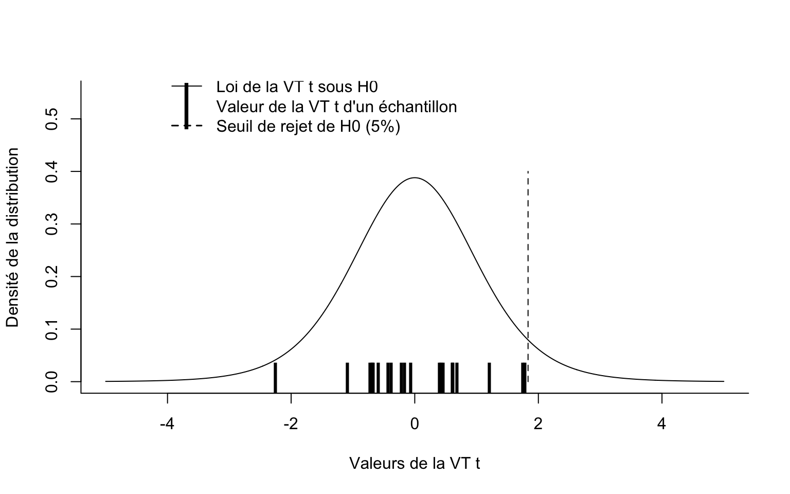
Interprétation.
On visualise très bien que certaines valeurs franchissent le seuil juste
par fluctuation d’échantillonnage.
0.05 / (1:10)#> [1] 0.050000000 0.025000000 0.016666667 0.012500000 0.010000000 0.008333333
#> [7] 0.007142857 0.006250000 0.005555556 0.005000000p.adjust(c(0.03, 0.8, 0.001, 0.015), method = "bonferroni")#> [1] 0.120 1.000 0.004 0.060Interprétation.
Bonferroni est simple et robuste, mais souvent très
conservateur.
p.adjust(c(0.8, 0.03, 0.015, 0.001), method = "holm")#> [1] 0.800 0.060 0.045 0.004Interprétation.
Holm contrôle aussi l’erreur familiale, mais est moins brutal que
Bonferroni.
p.adjust(c(0.8, 0.03, 0.015, 0.001), method = "BH")#> [1] 0.800 0.040 0.030 0.004Interprétation.
BH contrôle le False Discovery Rate.
C’est souvent plus adapté quand on fait beaucoup de tests et qu’on
accepte qu’une fraction des découvertes soit fausse.
pnorm(166.9, 165, 0.99, lower.tail = FALSE)#> [1] 0.02748002pnorm(165.8, 165, 0.99)#> [1] 0.790478pnorm(166.9, 165, 0.99)#> [1] 0.972522 * pnorm(166.9, 165, 0.99, lower.tail = FALSE)#> [1] 0.054960052 * pnorm(164.5, 165, 0.99)#> [1] 0.6135234Interprétation.
- Unilatéral droit : on teste une augmentation. -
Unilatéral gauche : on teste une diminution. -
Bilatéral : on teste tout écart, quel que soit le
sens.
Le test bilatéral “paie” le fait d’être plus large en répartissant \(\alpha\) dans les deux queues.
qnorm(0.05, 165, 0.99, lower.tail = FALSE)#> [1] 166.6284qnorm(0.05, 165, 0.99)#> [1] 163.3716alpha <- 0.025
Mseuil.inf <- qnorm(alpha, 165, 0.99)
Mseuil.sup <- qnorm(alpha, 165, 0.99, lower.tail = FALSE)
Mseuil.inf#> [1] 163.0596Mseuil.sup#> [1] 166.9404Interprétation.
En bilatéral à 5%, les deux seuils utilisent 2.5% chacun.
Mseuil <- 166.63
mu.h <- seq(163, 170, 0.01)
plot(
mu.h,
pnorm(Mseuil, mu.h, 0.99, lower.tail = FALSE),
type = "l",
main = expression(paste("Variation pour ", alpha, " = 5% et ", M[seuil], " = 166,63")),
xlab = expression(mu[h]),
ylab = expression(paste("Puissance 1-", beta)),
bty = "l"
)
abline(v = 165, lty = "39", lwd = 2)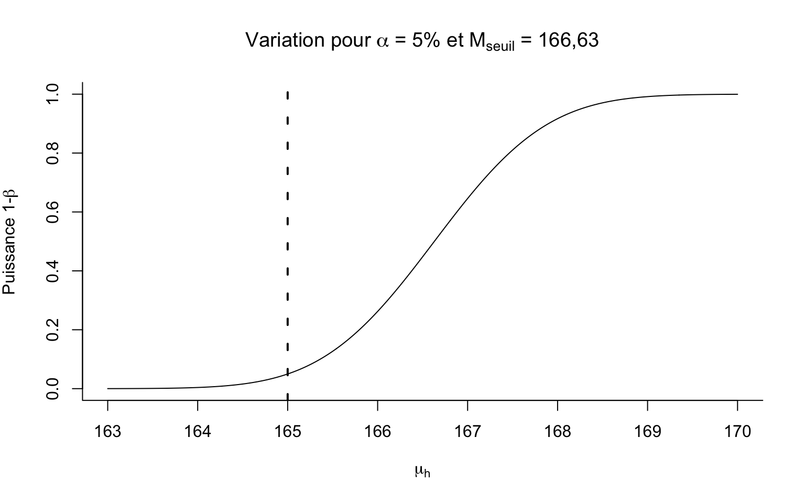
Interprétation.
Plus \(\mu_h\) s’éloigne de la valeur
nulle, plus la puissance augmente.
Un effet faible est difficile à détecter. C’est fâcheux, mais les
mathématiques n’ont pas d’empathie.
Mseuil <- 163.37
mu.h <- seq(161, 168, 0.01)
plot(
mu.h,
pnorm(Mseuil, mu.h, 0.99),
type = "l",
main = expression(paste("Variation pour ", alpha, " = 5% et ", M[seuil], " = 163,37")),
xlab = expression(mu[h]),
ylab = expression(paste("Puissance 1-", beta)),
bty = "l"
)
abline(v = 165, lty = "39", lwd = 2)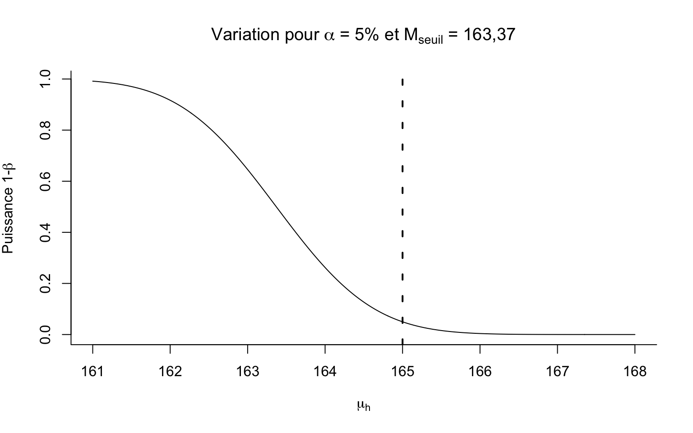
Mseuil.inf <- 163.06
Mseuil.sup <- 166.94
mu.h <- seq(160, 170, 0.01)
plot(
mu.h,
pnorm(Mseuil.inf, mu.h, 0.99) + pnorm(Mseuil.sup, mu.h, 0.99, lower.tail = FALSE),
type = "l",
main = expression(paste("Variation pour ", alpha, " = 5%")),
xlab = expression(mu[h]),
ylab = expression(paste("Puissance 1-", beta)),
bty = "l"
)
abline(v = 165, lty = "39", lwd = 2)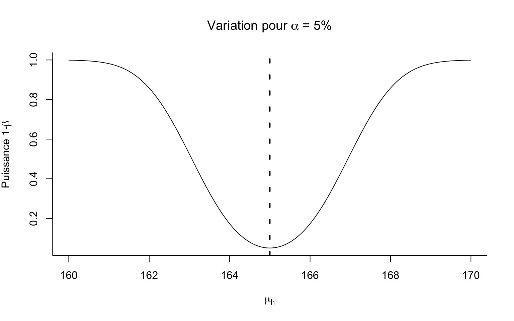
Interprétation.
La puissance bilatérale est symétrique autour de la valeur nulle,
puisqu’on rejette dans les deux directions.
x.seuil <- qnorm(0.05, 165, 7, lower.tail = FALSE)
faux.positif <- pnorm(x.seuil, 165, 7, lower.tail = FALSE)
faux.negatif <- pnorm(x.seuil, 169, 7)
x.seuil#> [1] 176.514faux.positif#> [1] 0.05faux.negatif#> [1] 0.8584598Interprétation.
- faux.positif correspond à \(\alpha\) ; - faux.negatif
correspond à \(\beta\) sous une
alternative donnée.
alpha <- 0.05
Mseuil <- qnorm(alpha, 165, 0.99, lower.tail = FALSE)
puissance_05 <- pnorm(Mseuil, 169, 0.99, lower.tail = FALSE)
alpha <- 0.001
Mseuil2 <- qnorm(alpha, 165, 0.99, lower.tail = FALSE)
puissance_001 <- pnorm(Mseuil2, 169, 0.99, lower.tail = FALSE)
c(puissance_05 = puissance_05, puissance_001 = puissance_001)#> puissance_05 puissance_001
#> 0.9917023 0.8289875Interprétation.
Quand on rend le test plus strict, la puissance baisse.
C’est le compromis classique : moins de faux positifs, mais plus de faux
négatifs.
alpha <- 0.05
n <- 30
Mseuil <- qnorm(alpha, 165, 7 / n^0.5, lower.tail = FALSE)
puissance_n30 <- pnorm(Mseuil, 169, 7 / n^0.5, lower.tail = FALSE)
n <- 100
Mseuil <- qnorm(alpha, 165, 7 / n^0.5, lower.tail = FALSE)
puissance_n100 <- pnorm(Mseuil, 169, 7 / n^0.5, lower.tail = FALSE)
c(puissance_n30 = puissance_n30, puissance_n100 = puissance_n100)#> puissance_n30 puissance_n100
#> 0.9312267 0.9999764Interprétation.
Augmenter n réduit l’erreur standard, sépare mieux \(H_0\) et \(H_1\), et augmente la puissance.
alpha <- 0.05
Mseuil <- qnorm(alpha, 165, 0.99, lower.tail = FALSE)
mu.h <- 167
puissance_167 <- pnorm(Mseuil, mu.h, 0.99, lower.tail = FALSE)
mu.h <- 169
puissance_169 <- pnorm(Mseuil, mu.h, 0.99, lower.tail = FALSE)
c(puissance_167 = puissance_167, puissance_169 = puissance_169)#> puissance_167 puissance_169
#> 0.6462993 0.9917023Interprétation.
Plus l’effet réel est grand, plus le test a de chances de le
détecter.
alpha <- 0.05
sigma <- 7
mu.h <- seq(165, 190, 0.01)
delta <- mu.h - 165
n <- 30
Mseuil <- qnorm(alpha, 165, sigma / n^0.5, lower.tail = FALSE)
plot(
delta,
pnorm(Mseuil, mu.h, sigma / n^0.5, lower.tail = FALSE),
type = "l", lwd = 2,
xlab = expression(Delta[(mu[h]-165)]),
ylab = expression(1 - beta),
main = expression(paste(alpha[seuil], " = 5% et ", sigma, " = 7 cm")),
xlim = range(0, 5),
bty = "l"
)
k <- 1
for (n in c(50, 100, 200, 500, 1000)) {
k <- k + 1
Mseuil <- qnorm(alpha, 165, sigma / n^0.5, lower.tail = FALSE)
lines(delta, pnorm(Mseuil, mu.h, sigma / n^0.5, lower.tail = FALSE), lty = k, lwd = 2)
}
legend(
"bottomright",
c("n=30", "n=50", "n=100", "n=200", "n=500", "n=1000"),
lty = 1:6, lwd = 2, bty = "n"
)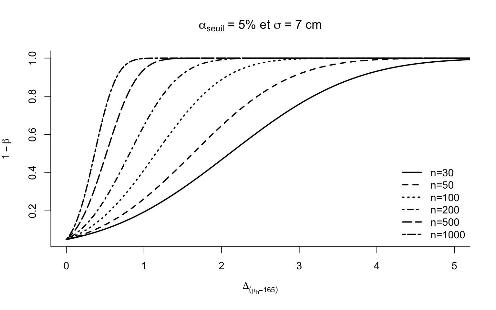
Interprétation.
Un abaque permet de lire rapidement le compromis entre taille
d’effet et effectif nécessaire.
power.t.test()power.t.test(n = 20, delta = 4, sd = 7, sig.level = 0.05,
power = NULL, type = "one.sample", alternative = "one.sided")#>
#> One-sample t test power calculation
#>
#> n = 20
#> delta = 4
#> sd = 7
#> sig.level = 0.05
#> power = 0.7933208
#> alternative = one.sidedpower.t.test(n = NULL, delta = 2, sd = 20, sig.level = 0.05,
power = 0.8, type = "one.sample", alternative = "one.sided")#>
#> One-sample t test power calculation
#>
#> n = 619.6107
#> delta = 2
#> sd = 20
#> sig.level = 0.05
#> power = 0.8
#> alternative = one.sidedInterprétation.
- Première commande : calcule la puissance si
n est fixé. - Deuxième commande : calcule le n
nécessaire pour atteindre une puissance donnée.
ncpn <- 20
m.theo <- 165
m.testee <- 169
sigma <- 7
ncp.test <- (m.testee - m.theo) / (sigma / n^0.5)
VT.t <- seq(-5, 10, 0.01)
plot(VT.t, dt(VT.t, n - 1), type = "l", lwd = 2,
xlab = "Valeurs de la VT t", ylab = "Densité de la distribution", bty = "l")
lines(VT.t, dt(VT.t, n - 1, ncp = ncp.test), type = "l", lwd = 2, col = "grey")
legend(
x = 4, y = 0.4,
c(expression(H[0]), expression(H[1])),
lty = c(1, 1), col = c("black", "grey"), lwd = 2, bty = "n"
)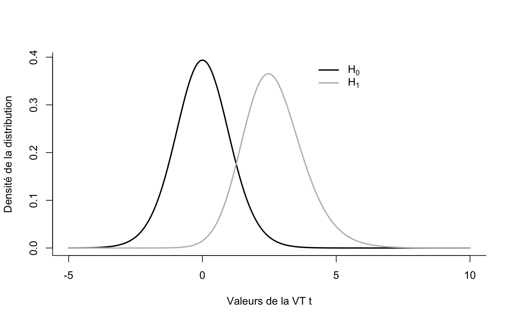
Interprétation.
La loi non centrale permet de modéliser directement la distribution de
la VT sous \(H_1\), ce
qui donne une approche élégante de la puissance.
alpha <- 0.05
t.seuil <- qt(alpha, n - 1, lower.tail = FALSE)
puissance <- pt(t.seuil, n - 1, ncp = ncp.test, lower.tail = FALSE)
puissance#> [1] 0.7933208power.t.test()power.t.test(n = 20, delta = 4, sd = 7, sig.level = 0.05,
power = NULL, type = "one.sample", alternative = "one.sided")#>
#> One-sample t test power calculation
#>
#> n = 20
#> delta = 4
#> sd = 7
#> sig.level = 0.05
#> power = 0.7933208
#> alternative = one.sidedInterprétation.
Les deux approches doivent donner des résultats cohérents :
ncp ;power.t.test().nb.eleves <- 122:130
nb.colleges <- c(1, 4, 24, 48, 59, 108, 92, 52, 12)
proportion.colleges <- nb.colleges / sum(nb.colleges)
effectif <- rep(nb.eleves, nb.colleges)
hist(effectif, breaks = c(121.5:130.5), freq = FALSE,
main = NULL, xlab = "Nombre d'élèves par collège",
ylab = "Proportion de collèges")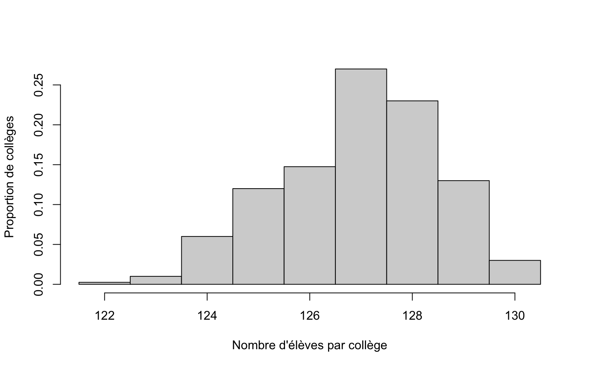
plot(nb.eleves, proportion.colleges, type = "b", pch = 16,
xlab = "Nombre d'élèves par collège", ylab = "Proportion de collèges", bty = "l")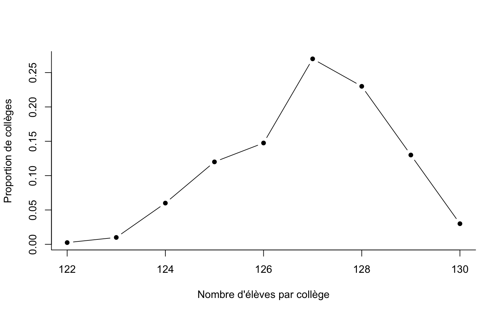
barplot(proportion.colleges, names.arg = nb.eleves,
xlab = "Nombre d'élèves par collège", ylab = "Proportion de collèges")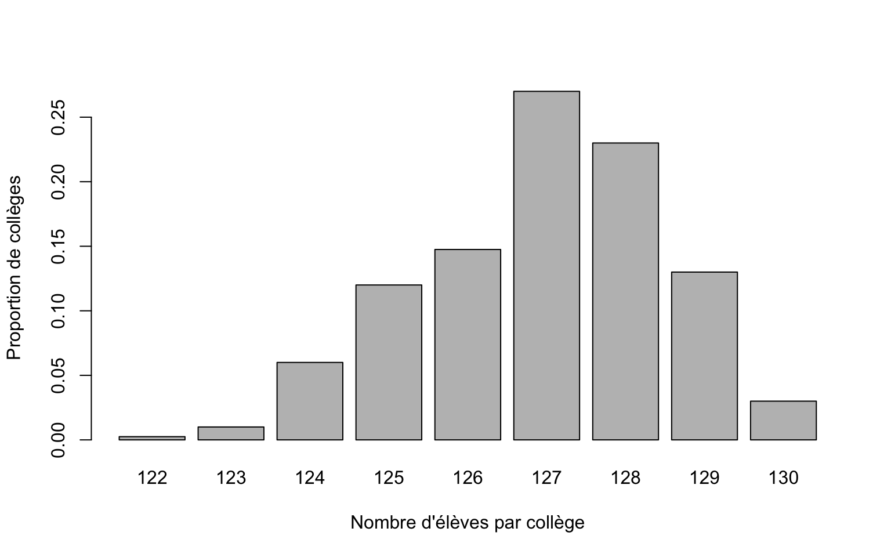
Interprétation.
Très utile pour distinguer :
mean <- 43
sigma <- 2.3
pnorm(43.5, mean, sigma) - pnorm(42.5, mean, sigma)#> [1] 0.1720966pnorm(43.05, mean, sigma) - pnorm(42.95, mean, sigma)#> [1] 0.01734395(43.5 - 42.5) * dnorm(43, mean, sigma)#> [1] 0.1734532Interprétation.
Pour une variable continue, on ne calcule pas une probabilité
ponctuelle, mais une probabilité sur un
intervalle.
La densité sert d’approximation locale quand l’intervalle est petit.
n1 <- 2
n2 <- 2
U.calc <- 4
U.seuil <- 3
alpha.seuil <- pwilcox(U.seuil - 1, n1, n2, lower.tail = FALSE)
p.value <- pwilcox(U.calc - 1, n1, n2, lower.tail = FALSE)
alpha.seuil#> [1] 0.3333333p.value#> [1] 0.1666667Interprétation.
Ce chunk montre la logique exacte du test :
U.seuil fixe un niveau de rejet ;U.calc fournit la valeur observée ;U.calc dans la
distribution exacte.library(gplots)
n <- 10
F <- rnorm(n / 2, 165, 7)
H <- rnorm(n / 2, 169, 7)
obs1 <- data.frame(c(F, H), c(rep("Femme", n / 2), rep("Homme", n / 2)))
names(obs1) <- c("Taille", "Sexe")
m <- sapply(split(obs1[, 1], obs1[, 2]), mean)
s <- sapply(split(obs1[, 1], obs1[, 2]), sd)
barplot2(
m,
xlim = c(0, 4), ylim = range(120, 200), space = 0.6,
names.arg = levels(obs1[, 2]), plot.ci = TRUE,
ci.l = (m - s), ci.u = (m + s),
xlab = names(obs1)[2], ylab = paste("Moyenne +/- écart type de", names(obs1)[1])
)
t.test(
split(obs1[, 1], obs1[, 2])[[2]],
split(obs1[, 1], obs1[, 2])[[1]],
var.equal = TRUE,
alternative = "greater"
)Interprétation.
Chunk utile pour relier :
n <- 200
k <- 4
proba.theo <- rep(1 / k, k)
X2.obs <- NULL
for (i in 1:500) {
obs <- rmultinom(1, n, prob = proba.theo)
X2.obs <- c(X2.obs, sum((obs - proba.theo * n)^2 / (proba.theo * n)))
}
hist(X2.obs, freq = FALSE,
main = expression(paste("Fluctuation de la VT ", chi^2)),
ylim = range(0, 0.3),
xlab = expression(paste("Valeurs de la VT ", chi^2)),
ylab = "Densité de la distribution")
VT.X2 <- seq(-0.1, 40, 0.01)
ddl <- k - 1
lines(VT.X2, dchisq(VT.X2, ddl))
legend("topright", c("A cause de l'échantillonnage", "Prévue par le test"),
lty = c(NA, 1), lwd = c(NA, 2), pch = c(22, NA), pt.cex = c(2.5, NA),
pt.bg = c("white", NA), bty = "n")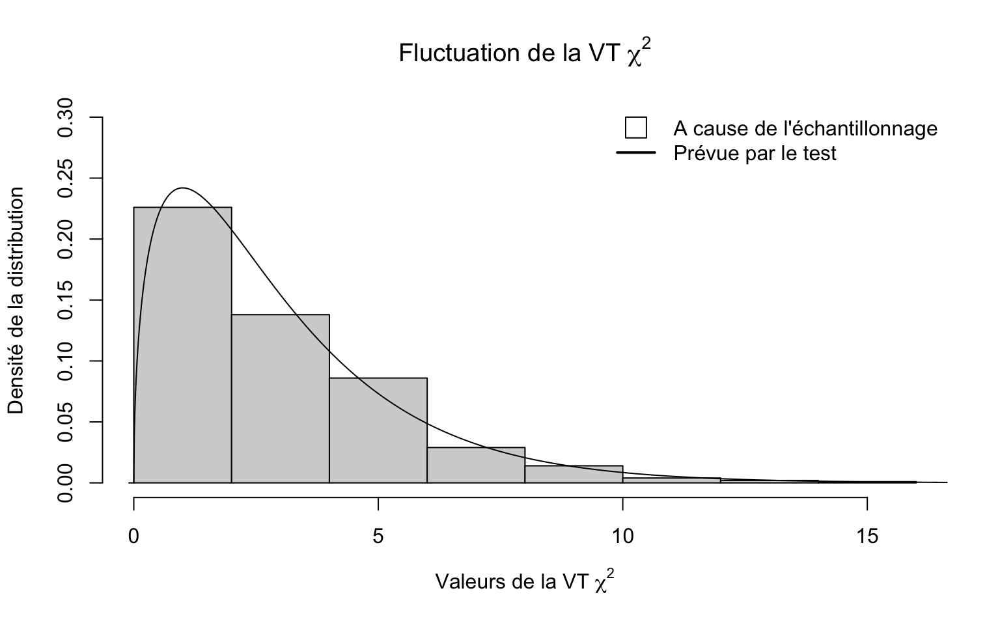
Interprétation.
Très bon chunk pour comprendre que la statistique \(\chi^2\) obtenue en pratique fluctue autour
de la loi théorique attendue sous \(H_0\).
nf <- 11
nh <- 9
n <- nf + nh
mu.f <- 165
mu.h <- 165
Uh <- NULL
for (i in 1:5000) {
Echantillon <- c(rnorm(nf, mu.f, 7), rnorm(nh, mu.h, 7))
Wh.calc <- sum(rank(Echantillon)[(nf + 1):n])
Uh.calc <- Wh.calc - 0.5 * nh * (nh + 1)
Uh <- c(Uh, Uh.calc)
}
hist(Uh, freq = FALSE,
main = expression(paste("Fluctuation de la VT ", U[h])),
ylim = range(0, max(hist(Uh, plot = FALSE)$density) * 1.3),
xlab = expression(paste("Valeurs de la VT ", U[h])),
ylab = "Densité de la distribution")
VT.U <- 0:(nf * nh)
lines(VT.U, dwilcox(VT.U, nh, nf), lwd = 2)
legend("topright",
c("A cause de l'échantillonnage", "Prévue par le test de Mann-Whitney"),
lty = c(NA, 1), lwd = c(NA, 2), pch = c(22, NA), pt.cex = c(2.5, NA),
pt.bg = c("white", NA), bty = "n")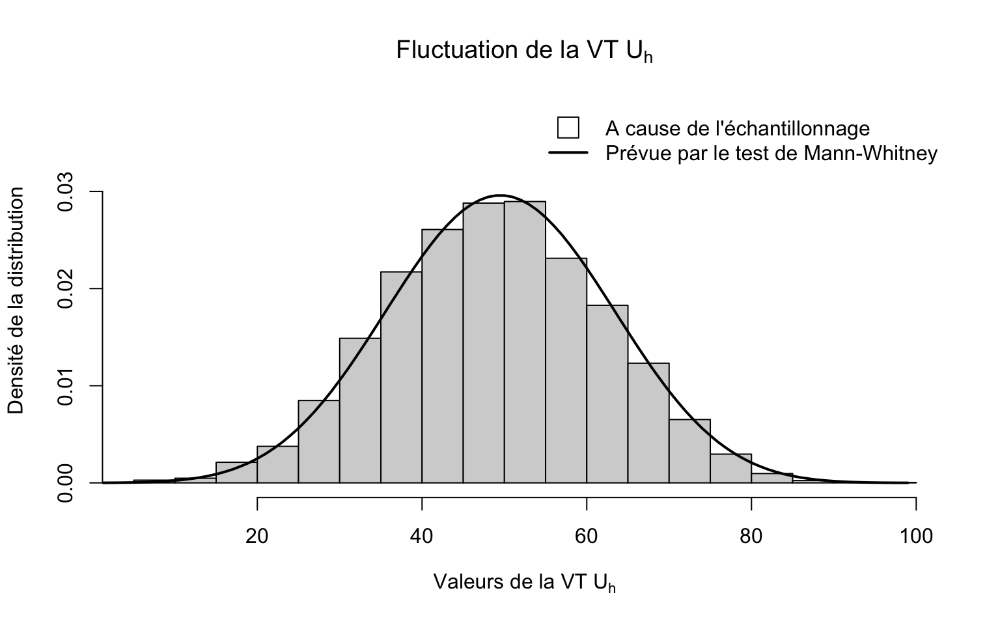
Interprétation.
Même logique que précédemment, mais sur une statistique de rangs.
d, p, q,
r.n augmente -> puissance augmente ;alpha diminue -> puissance diminue ;delta augmente -> puissance augmente ;dnorm() avec une probabilité ponctuelle
;lower.tail = FALSE quand on veut la queue
droite ;dbinom, pbinom,
qbinom, rbinomdnorm, pnorm,
qnorm, rnormdt, pt, qt,
rtdchisq, pchisq,
qchisq, rchisqdf, pf, qf,
rfdpois, ppois,
qpois, rpoisdwilcox, pwilcox,
qwilcoxdsignrank, psignrank,
qsignrankp.adjustpower.t.test,
power.prop.testSi vous voulez enrichir ce document ensuite, les améliorations les plus utiles seraient :
ggplot2 pour
une version plus propre ;
sessionInfo()#> R version 4.5.3 (2026-03-11)
#> Platform: aarch64-apple-darwin20
#> Running under: macOS Ventura 13.6.3
#>
#> Matrix products: default
#> BLAS: /Library/Frameworks/R.framework/Versions/4.5-arm64/Resources/lib/libRblas.0.dylib
#> LAPACK: /Library/Frameworks/R.framework/Versions/4.5-arm64/Resources/lib/libRlapack.dylib; LAPACK version 3.12.1
#>
#> locale:
#> [1] en_US.UTF-8/en_US.UTF-8/en_US.UTF-8/C/en_US.UTF-8/en_US.UTF-8
#>
#> time zone: Europe/Paris
#> tzcode source: internal
#>
#> attached base packages:
#> [1] stats graphics grDevices utils datasets methods base
#>
#> loaded via a namespace (and not attached):
#> [1] vctrs_0.7.1 cli_3.6.5 knitr_1.51 rlang_1.1.7
#> [5] xfun_0.56 stringi_1.8.7 otel_0.2.0 promises_1.5.0
#> [9] jsonlite_2.0.0 workflowr_1.7.2 glue_1.8.0 rprojroot_2.1.1
#> [13] git2r_0.36.2 htmltools_0.5.9 httpuv_1.6.16 sass_0.4.10
#> [17] rmarkdown_2.30 jquerylib_0.1.4 evaluate_1.0.5 tibble_3.3.1
#> [21] fastmap_1.2.0 yaml_2.3.12 lifecycle_1.0.5 stringr_1.6.0
#> [25] compiler_4.5.3 fs_1.6.7 Rcpp_1.1.1 pkgconfig_2.0.3
#> [29] rstudioapi_0.18.0 later_1.4.8 digest_0.6.39 R6_2.6.1
#> [33] pillar_1.11.1 magrittr_2.0.4 bslib_0.10.0 tools_4.5.3
#> [37] cachem_1.1.0